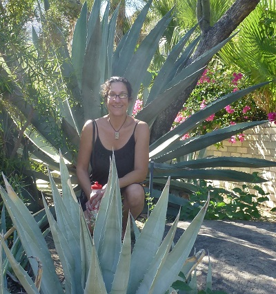
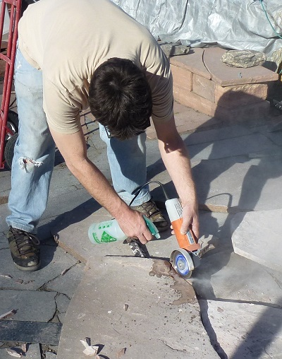
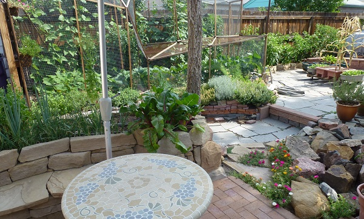
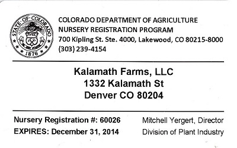
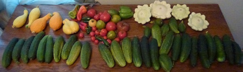
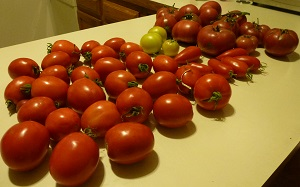

Welcome to Kalamath Farms
an adventure in sustainable gardening, edible landscapes, and outdoor living rooms
an adventure in sustainable gardening, edible landscapes, and outdoor living rooms

Marie studied Horticulture and Landscape Technologies at Front Range Community College and has been working in the garden and plant industry in and around Denver since 2006. She is an avid plant geek with experience ranging from propagation and interior plant maintenance to landscape design and gardening services. A long standing interest in sustainable practices, native and minimal resource plantings, and urban food production add a green element to her designs and methods.

Scott is a certified cabinet maker and enjoys building just about anything. Specializing in working reclaimed materials into functional designs with artistic flair, he supplies Kalamath Farms clients with custom designed beds, planters, trellises, patios & walkways, and welcomes difficult design challenges.


We have both been gardening for decades and starting an ever increasing number of vegetable plants for our friends. Marie began providing weekend gardening services to a select list of clients in 2009. In the spring of 2014 Marie and Scott combined their efforts to form Kalamath Farms and offer ornamental and vegetable gardening services, plants, planters, patio improvements, and general urban farming support to Denver area residents.

